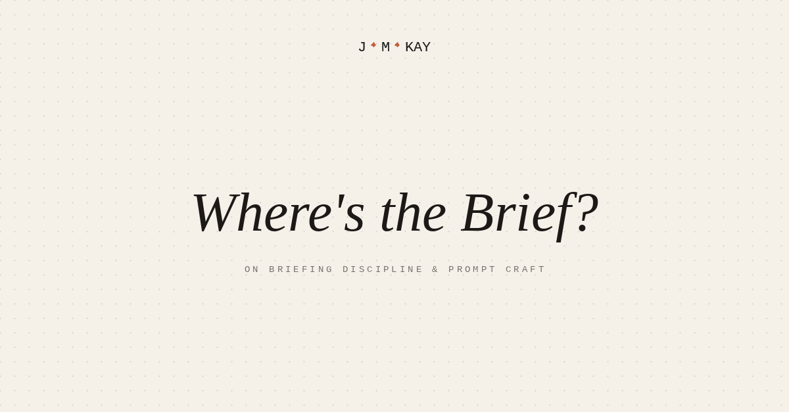

Prompt engineering, context management, agentic workflow ... fancy words for something fundamental.
Most of my engagements start with a question I've learned to ask early. Not the most obvious questions (budget, audience, deadline) but the question underneath all of those: what does success look like when this thing arrives, and who has to recognize it as success? It still does more for the work than anything else I can bring.
I've noticed the same discipline translates exceedingly well to working with LLMs. We are, quite literally, briefing Claude, Gemini, ChatGPT every time we open a new chat or project. Prompt engineering, context management, agentic workflow ... fancy terms for something that is actually quite fundamental.
I've been on every side of the briefing process. Written them as a strategist, received them as a producer, commissioned them from inside organizations, tried to rescue work from briefs that turned out thin too late. The discipline travels. Into the prompt window, into the spec for a new freelancer, into the note you leave yourself for tomorrow morning.
In Brief: What are we talking about?
A brief can take many forms, but at heart it's a translation. You're moving what's in your head, what you know, what you care about, what success looks like, across to someone, or something, that doesn't have any of it yet.
The idea is old. Account planners in 1960s advertising were already arguing their firms burned money on work that nobody had first clearly defined. Many have contended that a brief is a brave attempt to capture only the most important words, which certainly is a critical element.
When briefs go wrong, it's almost never the format. It's that the originator didn't yet know what they were asking for, didn't surface the constraints that mattered, or assumed the recipient could fill gaps they hadn't filled themselves. I really think this is not a competence issue but rather a craft or a skillset that, until now, has only been selectively taught.
Brief Encounters
The brief isn't complete when you first write it (and it probably never is). The first draft is a hypothesis; the reactions, conversations and updates that follow help inform the ‘real’ brief.
Constraints are permissions. People new to briefing often think they're being generous when they say go anywhere, no limits. It's the most disabling thing a brief can say. A creative team, a writer, or a model can't know how big to think without knowing what's off the table. Expand our thinking by, well, constraining it.
Are You Being Briefed?
None of this is new. The cost of rework that traces to a thin brief has been understood for decades across sectors. Software engineering and construction are the best-documented; every field with a handoff before execution has its own version.
But AI models can be notoriously obsequious, and many aren't designed to ‘push back’, clarify objectives, redirect erroneous assumptions, or push back on an ask that's secretly three separate workstreams. So the discipline matters even more when the recipient is an AI model. The corrective dialogue that has been baked into a human-centered briefing or pitching process is diminishing.
The encouraging part is that the craft is fully transferable. Some people have been writing briefs for years and have it cold. Others arrived at the same instinct on their own, without ever having a name for it. The rest are now being asked to learn it on the fly, every time they open a chat window.
What stays with me is that the essential craft and discipline are very similar, but now it is incumbent upon each user to introduce the ‘pushback’, the questions, and the constructive feedback that used to be part of a weekslong human-to-human process.
I'm curious what people who write briefs well, by training or by instinct, are noticing about how the craft carries, or doesn't, into how they work with these tools.